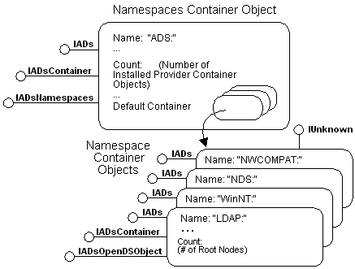

title: Active Directory Service Interfaces Architecture description: Many directory services are hierarchical and thus lend themselves to a hierarchical object model. This section uses COM object representations to illustrate various ADSI features. ms.assetid: ef545aea-a7a5-4f65-9133-e68b94a86311 ms.tgt_platform: multiple keywords:
Many directory services are hierarchical and thus lend themselves to a hierarchical object model. This section uses COM object representations to illustrate various ADSI features.
In the following object model figure, a top-level system object contains one Namespace object for every installed ADSI provider.

Each of the Namespace objects is itself a container that contains the top-level root nodes of every server, domain, or whatever other kinds of directory-system objects are defined as roots in each directory service.
ADSI supplies a set of predefined objects and interfaces so that client applications can interact with directory services using a uniform set of methods. However, ADSI may not provide access to all features of a directory service. To better use the full feature set of each directory service, ADSI supplies a schema model that directory service providers and third-party software vendors can use to extend features beyond the interfaces provided in ADSI.
The root-node container objects, found within each provider Namespace object, include an ADSI schema container object. This object contains the definition of all features for that provider. For more information, see ADSI Schema Model.
This section includes the following topics:
Â
Â